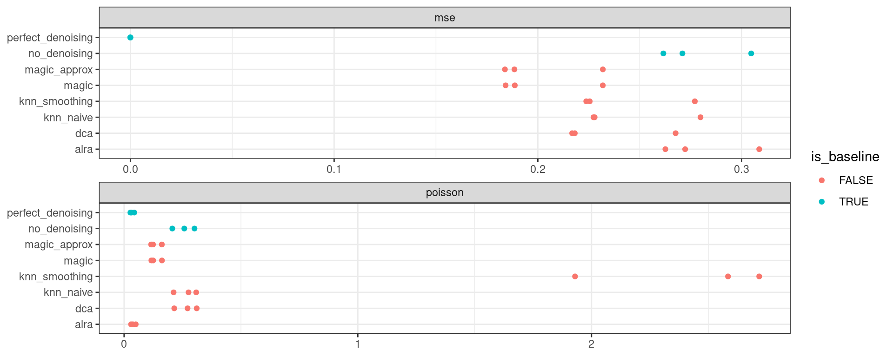
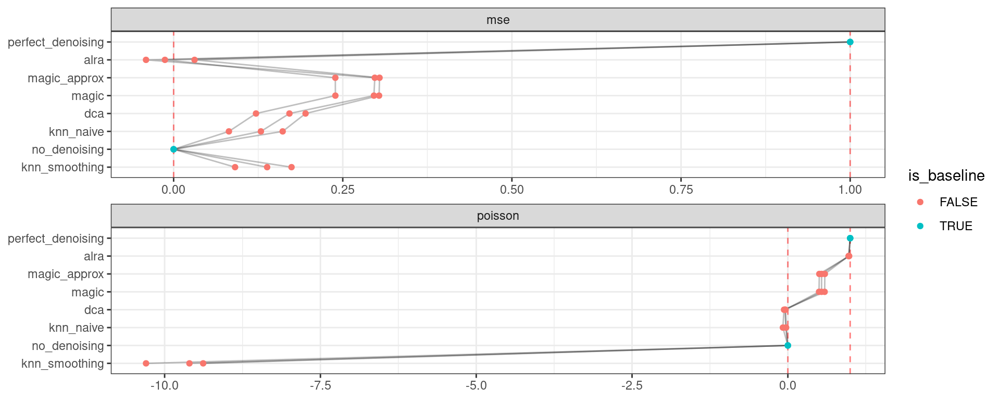
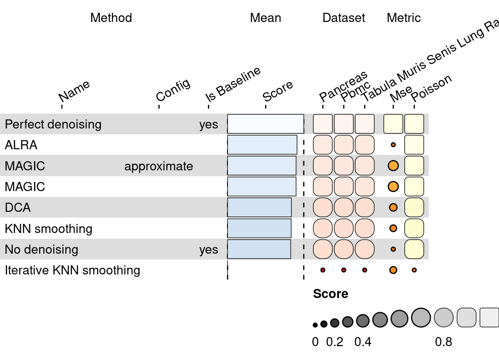

cross_df <- crossing(
dataset_info %>% select(dataset_id),
method_info %>% select(method_id, is_baseline),
metric_info %>% select(metric_id)
)Denoising
Pre-process raw scores
Build a full crossing to make sure no results are missing. It’s likely some of the methods didn’t finish running on all datasets.
Transform the results into a long format and join with the crossing.
results_long <-
results %>%
gather(metric_id, value, !!metric_info$metric_id) %>%
select(method_id, dataset_id, metric_id, value, is_baseline) %>%
full_join(cross_df, by = colnames(cross_df))Plot the raw scores.
ggplot(results_long) +
geom_point(aes(value, method_id, colour = is_baseline)) +
facet_wrap(~metric_id, ncol = 1, scales = "free") +
theme_bw() +
labs(x = NULL, y = NULL)
Compute scaling factors
- Compute the minimum and maximum scores of baseline methods per dataset per metric.
- Rescale values
scaling_factors <-
results %>%
filter(is_baseline) %>%
gather(metric_id, value, !!metric_info$metric_id) %>%
group_by(dataset_id, metric_id) %>%
summarise(
scale_min = ifelse(sum(!is.na(value)) == 0, 0, min(value, na.rm = TRUE)),
scale_max = ifelse(sum(!is.na(value)) == 0, 1, max(value, na.rm = TRUE)),
.groups = "drop"
)Visualise the scaling factors.
results_long_scaled <- results_long %>%
left_join(scaling_factors, by = c("dataset_id", "metric_id")) %>%
left_join(metric_info %>% select(metric_id, maximize), by = "metric_id") %>%
mutate(
scaled_score = case_when(
!is.na(value) ~ value,
maximize ~ scale_min,
!maximize ~ scale_max
),
scaled_score = (scaled_score - scale_min) / (scale_max - scale_min),
scaled_score = ifelse(maximize, scaled_score, 1 - scaled_score)
)overall_ranking <- results_long_scaled %>%
group_by(method_id) %>%
summarise(mean_score = mean(scaled_score)) %>%
arrange(desc(mean_score))View results
# order by ranking
results_long_scaled$method_id <- factor(results_long_scaled$method_id, levels = rev(overall_ranking$method_id))
ggplot(results_long_scaled %>% arrange(method_id)) +
geom_vline(aes(xintercept = x), tibble(x = c(0, 1)), linetype = "dashed", alpha = .5, colour = "red") +
geom_path(aes(scaled_score, method_id, group = dataset_id), alpha = .25) +
geom_point(aes(scaled_score, method_id, colour = is_baseline)) +
facet_wrap(~metric_id, ncol = 1, scales = "free") +
theme_bw() +
labs(x = NULL, y = NULL)
Overview
Add extra columns
per_dataset <- results_long_scaled %>%
group_by(method_id, dataset_id) %>%
summarise(score = mean(scaled_score), .groups = "drop") %>%
mutate(dataset_id = paste0("dataset_", dataset_id)) %>%
spread(dataset_id, score)
per_metric <- results_long_scaled %>%
group_by(method_id, metric_id) %>%
summarise(score = mean(scaled_score), .groups = "drop") %>%
mutate(metric_id = paste0("metric_", metric_id)) %>%
spread(metric_id, score)
summary <-
method_info %>%
transmute(
method_id,
name_tmp = method_name,
method_name = gsub(" \\(.*", "", name_tmp),
method_config = gsub("[^\\(]*\\(?([^\\)]*)\\)?", "\\1", name_tmp),
method_is_baseline = ifelse(is_baseline, "yes", "")
) %>%
select(-name_tmp) %>%
left_join(overall_ranking, by = "method_id") %>%
left_join(per_dataset, by = "method_id") %>%
left_join(per_metric, by = "method_id") %>%
arrange(desc(mean_score))# fix funkyheatmap defaults so we don't need to do the processing below
column_info <- tibble(
id = colnames(summary)[-1],
name = id %>%
gsub("^[^_]+_", "", .) %>%
gsub("_", " ", .) %>%
str_to_title(),
group = gsub("_.*", "", id),
geom = case_when(
group == "method" ~ "text",
group == "mean" ~ "bar",
group %in% c("dataset", "metric") ~ "funkyrect"
),
palette = ifelse(group %in% c("mean", "dataset", "metric"), group, NA_character_),
options = map2(id, geom, function(id, geom) {
if (id == "method_name") {
list(width = 6, hjust = 0)
} else if (id == "method_config") {
list(width = 4)
} else if (id == "is_baseline") {
list(width = 1)
} else if (geom == "bar") {
list(width = 4)
} else {
list()
}
})
)
g <- funky_heatmap(
data = summary,
column_info = column_info,
expand = c(xmax = 3),
col_annot_offset = 4
)ℹ Could not find column 'id' in data. Using rownames as 'id'.ℹ No row info was provided, assuming all rows in `data` are to be plotted.ℹ Row info did not contain group information, assuming rows are ungrouped.ℹ No column groups was provided, deriving from column info.ℹ Column groups did not contain a column called 'palette'. Assuming no colour scales need to be used.ℹ Column groups did not contain a column called 'level1'. Using `column_info$group` as a makeshift column group name.ℹ No palettes were provided, trying to automatically assign palettes.ℹ Palette named 'mean' was not defined. Assuming palette is numerical. Automatically selected palette 'Blues'.ℹ Palette named 'dataset' was not defined. Assuming palette is numerical. Automatically selected palette 'Reds'.ℹ Palette named 'metric' was not defined. Assuming palette is numerical. Automatically selected palette 'YlOrBr'.Warning: Ignoring unknown parameters: sizeg
Quality control
| section | name | variable | lower | value | upper | test |
|---|---|---|---|---|---|---|
| Metric scaling | Lower bound check scores after scaling | poisson | -1 | -10.298 | 2.0 | ✗ |
| Metric scaling | Upper bound check scores after scaling | mse | -1 | 1.000 | 2.0 | ✓ |
| Metric scaling | Upper bound check scores after scaling | poisson | -1 | 1.000 | 2.0 | ✓ |
| Metric scaling | Lower bound check scores after scaling | mse | -1 | -0.041 | 2.0 | ✓ |
| Raw data | Long table size | 48 | 48.000 | 48.0 | ✓ | |
| Raw data | Percentage of missing results | 0 | 0.000 | 0.1 | ✓ | |
| Raw data | Percentage of missing results per dataset | pancreas | 0 | 0.000 | 0.1 | ✓ |
| Raw data | Percentage of missing results per dataset | pbmc | 0 | 0.000 | 0.1 | ✓ |
| Raw data | Percentage of missing results per dataset | tabula_muris_senis_lung_random | 0 | 0.000 | 0.1 | ✓ |
| Raw data | Percentage of missing results per method | alra | 0 | 0.000 | 0.1 | ✓ |
| Raw data | Percentage of missing results per method | dca | 0 | 0.000 | 0.1 | ✓ |
| Raw data | Percentage of missing results per method | knn_naive | 0 | 0.000 | 0.1 | ✓ |
| Raw data | Percentage of missing results per method | knn_smoothing | 0 | 0.000 | 0.1 | ✓ |
| Raw data | Percentage of missing results per method | magic | 0 | 0.000 | 0.1 | ✓ |
| Raw data | Percentage of missing results per method | magic_approx | 0 | 0.000 | 0.1 | ✓ |
| Raw data | Percentage of missing results per method | no_denoising | 0 | 0.000 | 0.1 | ✓ |
| Raw data | Percentage of missing results per method | perfect_denoising | 0 | 0.000 | 0.1 | ✓ |
| Raw data | Percentage of missing results per metric | mse | 0 | 0.000 | 0.1 | ✓ |
| Raw data | Percentage of missing results per metric | poisson | 0 | 0.000 | 0.1 | ✓ |